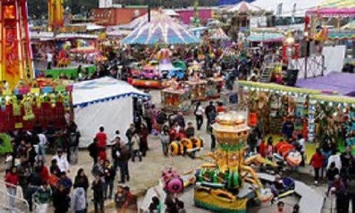
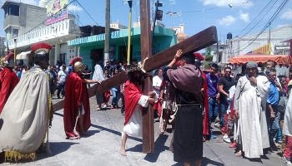
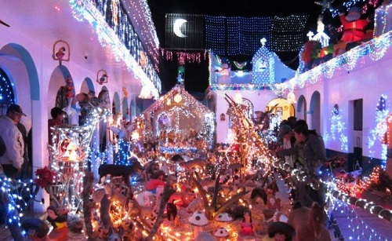
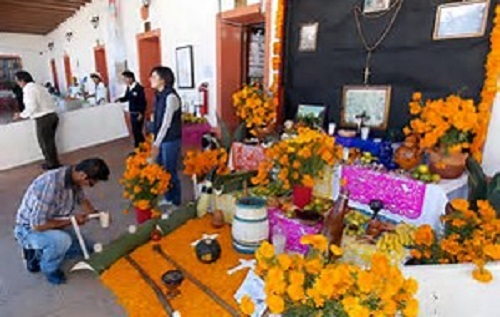
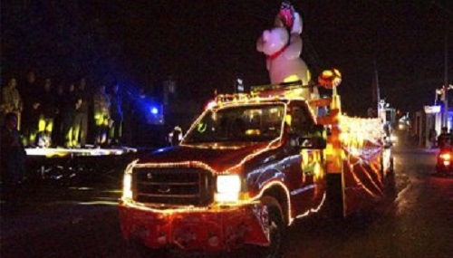

Fiestas, Danzas y Tradiciones.
Tradiciones y costumbres
Sus tradiciones y costumbres se centran principalmente en cuestiones religiosas, además de las que se han heredado de generaciones pasadas, sin en cambio algunas han sido adoptadas de otras regiones debido a la migración constante de sus pobladores, dentro de las más importantes destacan las siguientes:
• Feria de El Carmen Tequexquitla
• Semana Santa
• Celebración de La Navidad y Año Nuevo
• Día de muertos
• Carnaval
Feria de El Carmen Tequexquitla
La Feria del Carmen Tequexquitla se realiza en honor a la Virgen del Carmen el día 16 de Julio, se extiende generalmente por una semana donde se realizan principales actividades la mayoría de orden Religiosos, por otra parte por parte del Ayuntamiento también se realizan actividades como la coronación de la Reina, actividades deportivas, muestras gastronómicas, desfiles. También se realiza el Baile de Feria generalmente organizado por Empresas Particulares.

Semana santa
La semana santa tiene un enfoque Religioso y es una de las fechas más importantes para la comunidad después de la feria. se celebra durante los meses de abril o Marzo según correspondan las fechas, en ella se hace una representación de la vida de cristo , su muerte y resurrección, mediante una obra que dura varios días.
Se acostumbra también festejar el Sábado de Gloria en “El rio” de Totolcingo. En donde celebran con comida, música, deportes y mojándose en las albercas.

Celebración de las fiestas Navideñas y Año nuevo
A partir del 16 de Diciembre hasta el día 23 se celebran por la noche las tradicionales posadas en las calles principales de la comunidad (Cuahutemos, Aldama, Perlas de Oriente, entre otras) en las cuales los vecinos se organizan y realizan tamales, colaciones, ponche, buñuelos y los repartes a los asistentes después de que se haya celebrado la representación del nacimiento de cristo. A finales de año se acostumbra celebrar el 24 de diciembre por la noche con una cena donde se reúnen las familias con comidas típicas como tamales, mole, pavo, barbacoa u otras comidas típicas. En ocasiones se rompen piñatas y se toma ponche, al finalizar el año el 31 de diciembre se celebra por la noche una cena para despedir el año viejo y comenzar uno nuevo para lo en la cual se preparan alimentos similares a los del día 24 además de comer uvas para pedir deseos, en ocasiones utilizan ropa de color rojo para suerte en el amor y amarilla para el dinero, algunos hacen maletas y salen corriendo para que tengan viajes durante el año que se avecina. También suele quemarse un muñeco que representa al año viejo para despedirlo. Hay pirotecnia y música.

Día de muertos
En estas fechas durante el 28 de octubre y 1,2 de Noviembre se celebra a los Fieles Difuntos mediante la celebración de misas religiosas y ofrendas donde se colocan los alimentos que fueron del agrado de los difuntos, también se pide Halloween, tradición optada por otros lugares, y cada vez en menos medida se acostumbraba pedir calavera. Las casas se adornan con calabazas, calaveras, vampiros, telarañas…

Carnaval
Generalmente se realizan eventos de carnaval bailables y desfiles por las principales calles de la comunidad, con disfraces y carros alegóricos. Una del as danzas muy conocidas y originarias de la región es el baile de los negritos.
En el Estado de Tlaxcala las danzas y la música típica tradicional, se relaciona primordialmente con las festividades religiosas paganas y con las festividades del carnaval. Ambas son parte de la identidad comunitaria e histórica del pueblo tlaxcalteca.
La música y las danzas se heredan de una generación a otra ya sea como danzante o como interprete, aunque los que participan directamente son realmente grupos reducidos de personas, una gran parte de la población de cada comunidad participa tradicionalmente como espectador o colateralmente en la organización y preparación de los festejos.
En la comunidad de El Carmen la danza ocupa un lugar importante por su alto sentido socio-religioso y socio-cultural. Entre las principales danzas se encuentra la danza de los Negritos, la danza de los segadores presentada en el reciente Congreso Nacional de Danza. Existen además las danzas de los monarcas, los tocotines y los inditos. La música se crea con la solo utilización de un violín, los sones que tradicionalmente se ejecutan llevan el nombre del corte de la danza que se está ejecutando, así se hallan nombres como "el saludo", "la presentación", "la promesa", "son cruzado", "la cadena", "punteando", "la cruz", "respaldeado", "pespunteado", "media vuelta", "vuelta entera", entre otros
El 16 de julio se celebra a la patrona del pueblo que es la Virgen del Carmen. El 15 de julio para amanecer el 16, se lleva a cabo una gran procesión con Danzas, alfombras de frutas y semillas, así como tapetes de aserrín y flores. El remate de feria se realiza el domingo posterior al 16 de julio, si cae entre semana. Se sueltan toros bravos por el centro del poblado, evento conocido como encierro de toros estilo Huamantla.
